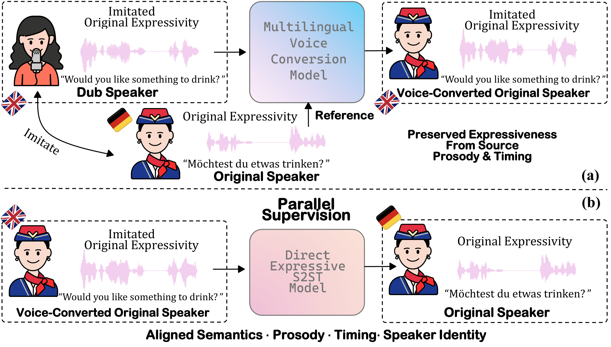
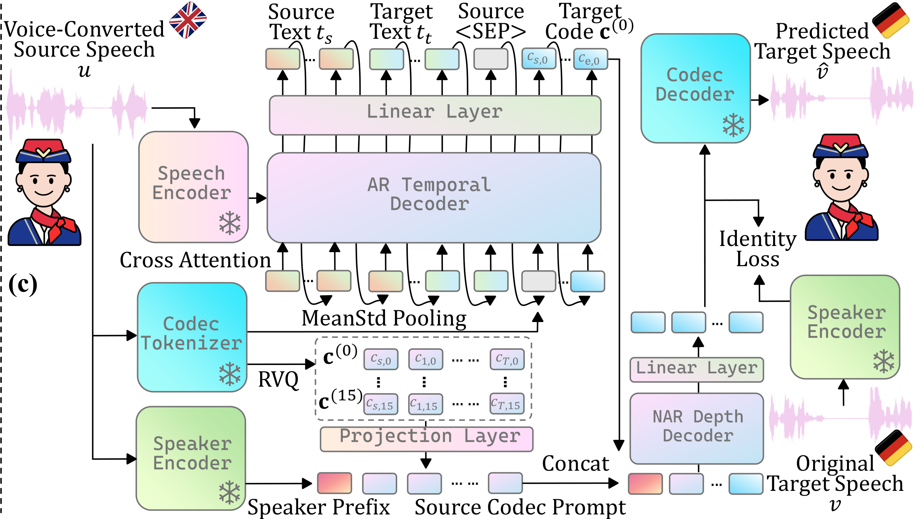

Holistic Parallel Supervision for Expressive Speech-to-Speech Translation
Hao Zhang, Ismail Rasim Ulgen, Bismarck Bamfo Odoom, Rui Liu, Zihan Zhang, Berrak Sisman, Philipp Koehn Center for Language and Speech Processing, Johns Hopkins University
Abstract:
Expressiveness is central to speech-to-speech translation (S2ST), yet existing datasets rarely align source and
target speech jointly in content, prosody, timing, and speaker identity. Consequently, current systems often rely
on indirect conditioning or transfer mechanisms. To obtain this supervision, we introduce a training-data
construction strategy that combines professional dubbing, which provides human-performed correspondence in
content, prosody, and timing, with multilingual voice conversion to reduce speaker mismatch. We evaluate this
supervision using existing expressive S2ST systems and DirectS2ST, an end-to-end method developed in this work
that predicts the complete target-speech representation directly from source speech. Experiments on
English–German and English–Spanish show that holistic parallel supervision improves expressive realization across
all evaluated systems. DirectS2ST exhibits the largest gains in content, prosody, timing, speaker similarity, and
human-rated expressiveness. To our knowledge, this work provides the first systematic investigation of holistic
parallel supervision for expressive S2ST.
Training Data Construction
VC-Dub: Dubbing + Voice Conversion
Professional dubbing supplies human-performed correspondence in content, prosody, and timing. Multilingual
voice conversion (Seed-VC) moves the English dub to the original speaker's voice, so the resulting pairs are
parallel in content, prosody, timing, and speaker identity. The original German/Spanish recording is
retained as the target after audio cleaning, without TTS or VC resynthesis.

Figure 1 (a, b). (a) VC-Dub construction: the English dub, which imitates the
original performance, is voice-converted to the original speaker using the original utterance as the speaker
reference. (b) Parallel supervision: the voice-converted English speech becomes the source and the
original German/Spanish recording the target, aligned in semantics, prosody, timing, and speaker identity.
[PDF]
Data Quality Control
VC-DUB Cleaning and Filtering
We apply denoising, vocal extraction, language identification,
speaker filtering, and speech-quality filtering before constructing
the final VC-DUB training splits.
Panel A: Filtering Statistics
Stage
En–Es
En–De
Pairs
Total Hrs.
Retention
Pairs
Total Hrs.
Retention
Raw dubbing from Speech Vecalign
352,947
748.29
–
369,139
782.86
–
After ClearVoice + Demucs
352,947
748.29
100.0%
369,137
782.86
100.0%
After MMS-LID
213,469
536.63
60.5%
298,929
693.40
81.0%
After Sortformer single-speaker gate
164,746
349.43
46.7%
237,743
468.28
64.4%
After DNSMOSPro quality cutoff
90,000
194.51
25.5%
147,639
295.80
40.0%
Training split used in Table 1
79,200
171.13
–
131,399
263.22
–
Panel B: Filtering Settings
Denoising
ClearVoice-Studio with MossFormer2_SE_48K under default inference.
Vocal extraction
Demucs htdemucs; we retain the vocal stem and require successful preprocessing on both source and target sides.
Language identification
MMS-LID facebook/mms-lid-126; we retain pairs whose top-1 predicted labels match the expected languages. Expected labels are eng/spa for En–Es and eng/deu for En–De. No confidence threshold is applied.
Speaker filtering
Sortformer nvidia/diar_sortformer_4spk-v1; audio is converted to 16 kHz mono. Retain pairs only when exactly one active speaker is detected in each utterance.
Quality filtering
DNSMOSPro is used as a quality predictor. We score both source and target utterances, compute a combined source–target quality score, and retain pairs above the empirical quality cutoff. The cutoff characterizes the quality floor of the retained clean pool while keeping the final VC-DUB training split comparable in scale to CVSS-T.
DNSMOSPro cutoff
The retained–dropped boundary is approximately 3.57 for En–Es and 3.60 for En–De.
Split construction
The retained clean pool is subsequently split for controlled S2ST training. The final row in Panel A reports the training split used in Table 1.
Note.
Total hours denote the combined source and target durations, computed
using the same VAD-span definition as Table 1. Retention is computed
relative to the original raw dubbing pool. The final training-split row
is included for comparison with Table 1 and does not represent an
additional cleaning stage. The DNSMOSPro cutoff reports the empirical
quality boundary of the retained pool.
Training Data Analysis
Pair-Level Correspondence
Raw-Dub already gives stronger content, prosody, and timing correspondence than CVSS-T;
its main weakness is speaker mismatch. Voice conversion substantially raises Vsim and further increases A.PCP.
Shuffling the VC-Dub pairings (negative control) substantially reduces the
correspondence scores.
Dir.
Dataset
BLASER↑
A.PCP↑
Rate↑
Pause↑
Vsim↑
DNSMOSPro↑ (src | tgt)
En→De
CVSS-T
3.405
2.505
0.365
0.524
0.208
3.160 | 2.797
Raw-Dub
3.634
2.759
0.416
0.682
0.060
3.900 | 3.684
VC-Dub
3.611
3.000
0.435
0.698
0.406
4.104 | 3.684
w/ Shuffled
2.285
2.218
-0.009
0.394
0.025
4.104 | 3.684
En→Es
CVSS-T
3.400
2.537
0.372
0.550
0.194
3.173 | 2.780
Raw-Dub
3.632
2.920
0.417
0.676
0.046
3.913 | 3.714
VC-Dub
3.606
3.183
0.436
0.686
0.362
4.091 | 3.714
w/ Shuffled
2.199
2.345
-0.003
0.361
0.027
4.091 | 3.714
Table 2. Pair-level correspondence and speech quality of the training data for CVSS-T,
Raw-Dub, and VC-Dub. Shuffled VC-Dub
pairs provide a negative control. DNSMOSPro is reported as source (En) | target (De/Es).
Direct Modeling
DirectS2ST
DirectS2ST is trained to predict all 16 target Mimi codec streams from source-derived conditions, with every
stream supervised by the paired human recording. Its acoustic and speaker prompts are extracted from the source
during both training and inference.

Figure 1 (c). DirectS2ST. A frozen w2v-BERT 2.0 encoder provides source memory through cross-attention.
The AR temporal decoder generates source text, target text, and the first target codec stream
c(0) with a shared output head; its <SEP> embedding is replaced by a mean–std pooled Mimi
prompt extracted from the source speech. A NAR depth decoder predicts c(1)–c(15),
conditioned on a source codec prompt and a projected source-speaker embedding from a frozen CAMPPlus encoder,
and is trained with an additional speaker-identity loss. At inference, beam search (beam 5) decodes the text–c(0) sequence, then the
depth decoder greedily fills c(1)–c(15).
[PDF]
Evaluation on mExpresso
Results
504 test utterances per direction, evenly distributed across seven expressive conditions. Content: ASR-BLEU
(Whisper-large-v3) and BLASER 2.0-QE; prosody and timing: AutoPCP (A.PCP), speaking-rate correlation (Rate) and
pause similarity (Pause); speaker similarity: Vsim; naturalness: NISQA-TTS (NAT).
Dir.
Model
Train
ASR-BLEU↑
BLASER↑
A.PCP↑
Rate↑
Pause↑
Vsim↑
NAT↑
En→De
TransVIP
CVSS-T
12.25
3.397
2.609
0.470
0.489
0.126
3.257
TransVIP
VC-Dub
13.84
3.399
2.743†
0.600†
0.549†
0.169†
3.472†
DirectS2ST
CVSS-T
6.01
3.234
2.162
0.334
0.687
0.114
3.339
DirectS2ST
VC-Dub
10.52†
3.373†
2.905†,‡
0.589†
0.752†,‡
0.217†,‡
3.450†
En→Es
TransVIP
CVSS-T
15.53
3.354
2.664
0.601
0.494
0.138
3.092
TransVIP
VC-Dub
18.96†
3.433†
2.803†
0.671†
0.562†
0.158†
3.407†
Dub-S2ST
CVSS-T
11.61
3.239
2.933
0.581
0.596
0.218
3.658
Dub-S2ST
CVSS-TS
11.89
3.226
2.938
0.608
0.572
0.214
3.631
Dub-S2ST
VC-Dub
15.21
3.321†
3.012†
0.595
0.612
0.238†
3.759†
DirectS2ST
CVSS-T
10.00
3.153
2.238
0.433
0.652
0.105
3.361
DirectS2ST
VC-Dub
14.22†
3.259†
3.091†,‡
0.669†
0.733†,‡
0.205†
3.466†
Table 3. Expressive S2ST results on mExpresso. † denotes
significance between training sets within the same model, and ‡ against
the strongest baseline in the same language direction (two-sided paired randomization tests, 10,000
permutations, Holm–Bonferroni correction, padj < 0.05). Bold marks the best score per direction.
Dub-S2ST is evaluated only on En→Es: the mHuBERT checkpoint used in this baseline covers English, Spanish, and
French. CVSS-TS is its speed-adapted CVSS-T variant. Dub-S2ST denotes our adapted baseline: we
replace its original S2U module with the model of Popuri et al. (2022) and retain its CosyVoice-initialized U2S
module. Both components are trained on the corresponding supervision dataset.
Dir.
Train
ASR-BLEU↑
BLASER↑
A.PCP↑
Rate↑
Pause↑
Vsim↑
NAT↑
En→De
VC-Dub
10.52
3.373
2.905†
0.589†
0.752
0.217†
3.450
Raw-Dub
9.37
3.339
2.712
0.455
0.741
0.065
3.430
En→Es
VC-Dub
14.22
3.259
3.091†
0.669†
0.733
0.205†
3.466
Raw-Dub
14.53
3.266
2.824
0.555
0.730
0.058
3.470
Table 4. Contribution of voice conversion: DirectS2ST trained on the same aligned dubbing pairs
with (VC-Dub) and without (Raw-Dub) VC. VC mainly improves
speaker similarity, with additional gains in A.PCP and Rate.
Model
Training Data
MOS↑
95% CI
TransVIP
CVSS-T
1.82
[1.62, 2.01]
TransVIP
VC-Dub
2.24†
[2.03, 2.44]
Dub-S2ST
CVSS-T
2.88
[2.63, 3.12]
Dub-S2ST
VC-Dub
3.59†
[3.34, 3.84]
DirectS2ST
CVSS-T
2.13
[1.93, 2.33]
DirectS2ST
VC-Dub
3.42†
[3.20, 3.64]
Table 5. Expressiveness MOS (En→Es, 9 listeners × 10 utterances) with 95% confidence
intervals. ICC(A,1) = 0.445, ICC(A,9) = 0.878. † padj < 0.05
(crossed linear mixed-effects model, Holm–Bonferroni).
Audio Demo
Speech Samples
Each system is trained on CVSS-T or on our VC-Dub data. Source utterances come from the
mExpresso test set; texts are shown as in the dataset transcripts, with emphasized words in
bold italics.
English → Spanish
The 10 utterances used in the expressiveness listening test (Table 5), with all six system configurations.
#1Sadex01_sad_00317
Source (En) What's the emergency? Reference (Es) ¿Cuál es la emergencia?
Source speech (En)
TransVIP · CVSS-T
TransVIP · VC-Dub
Dub-S2ST · CVSS-T
Dub-S2ST · VC-Dub
DirectS2ST · CVSS-T
DirectS2ST · VC-Dub(ours)
#2Defaultex01_default_00010
Source (En) I don't know. My mom said I was, but my dad told me to just blow her off. Reference (Es) No sé. Mi mamá me dijo que yo lo estaba, pero mi papá me dijo que solo la ignore.
Source speech (En)
TransVIP · CVSS-T
TransVIP · VC-Dub
Dub-S2ST · CVSS-T
Dub-S2ST · VC-Dub
DirectS2ST · CVSS-T
DirectS2ST · VC-Dub(ours)
#3Confusedex01_confused_00020
Source (En) Hold the elevator, please! Reference (Es) ¡Paren el ascensor, por favor!
Source speech (En)
TransVIP · CVSS-T
TransVIP · VC-Dub
Dub-S2ST · CVSS-T
Dub-S2ST · VC-Dub
DirectS2ST · CVSS-T
DirectS2ST · VC-Dub(ours)
#4Sadex04_sad_00364
Source (En) OK, now you have a podcast that's available on Audible. Reference (Es) Bien, ahora tienes un pódcast que está disponible en Audible.
Source speech (En)
TransVIP · CVSS-T
TransVIP · VC-Dub
Dub-S2ST · CVSS-T
Dub-S2ST · VC-Dub
DirectS2ST · CVSS-T
DirectS2ST · VC-Dub(ours)
#5Whisperex01_whisper_00155
Source (En) Effort is all it takes. Reference (Es) Todo lo que se necesita es hacer un esfuerzo.
Source speech (En)
TransVIP · CVSS-T
TransVIP · VC-Dub
Dub-S2ST · CVSS-T
Dub-S2ST · VC-Dub
DirectS2ST · CVSS-T
DirectS2ST · VC-Dub(ours)
#6Enunciatedex02_enunciated_00170
Source (En) Have you read this? Reference (Es) ¿Has leído esto?
Source speech (En)
TransVIP · CVSS-T
TransVIP · VC-Dub
Dub-S2ST · CVSS-T
Dub-S2ST · VC-Dub
DirectS2ST · CVSS-T
DirectS2ST · VC-Dub(ours)
#7Happyex04_happy_00230
Source (En) The vampire slayer? Reference (Es) ¿La cazavampiros?
Source speech (En)
TransVIP · CVSS-T
TransVIP · VC-Dub
Dub-S2ST · CVSS-T
Dub-S2ST · VC-Dub
DirectS2ST · CVSS-T
DirectS2ST · VC-Dub(ours)
#8Emphasisex01_default_emphasis_00120
Source (En) The people deserve to know the truth. Reference (Es) La gente merece conocer la verdad.
Source speech (En)
TransVIP · CVSS-T
TransVIP · VC-Dub
Dub-S2ST · CVSS-T
Dub-S2ST · VC-Dub
DirectS2ST · CVSS-T
DirectS2ST · VC-Dub(ours)
#9Whisperex01_whisper_00272
Source (En) So, what's it about? Reference (Es) Entonces, ¿de qué se trata?
Source speech (En)
TransVIP · CVSS-T
TransVIP · VC-Dub
Dub-S2ST · CVSS-T
Dub-S2ST · VC-Dub
DirectS2ST · CVSS-T
DirectS2ST · VC-Dub(ours)
#10Confusedex02_confused_00216
Source (En) She stayed in eleven different foster homes? Reference (Es) ¿Ella estuvo en once hogares de acogida diferentes?
Source speech (En)
TransVIP · CVSS-T
TransVIP · VC-Dub
Dub-S2ST · CVSS-T
Dub-S2ST · VC-Dub
DirectS2ST · CVSS-T
DirectS2ST · VC-Dub(ours)
English → German
10 utterances from the En→De test set across expressive conditions. Dub-S2ST is not included: the mHuBERT
checkpoint used in this baseline covers English, Spanish, and French.
#1Happyex04_happy_00016
Source (En) Oh, no, people do. Reference (De) Oh nein, die Leute tun das.
Source speech (En)
TransVIP · CVSS-T
TransVIP · VC-Dub
DirectS2ST · CVSS-T
DirectS2ST · VC-Dub(ours)
#2Happyex03_happy_00219
Source (En) Did you give him his pacifier? Reference (De) Hast du ihm seinen Schnuller gegeben?
Source speech (En)
TransVIP · CVSS-T
TransVIP · VC-Dub
DirectS2ST · CVSS-T
DirectS2ST · VC-Dub(ours)
#3Laughingex02_laughing_00231
Source (En) That's great! I recommend "The Last Colony" and "The Mepphisto Club" if you haven't read those two yet. Reference (De) Das ist großartig! Ich empfehle „Die letzte Kolonie“ und „Blutmale“, falls du die beiden noch nicht gelesen hast.
Source speech (En)
TransVIP · CVSS-T
TransVIP · VC-Dub
DirectS2ST · CVSS-T
DirectS2ST · VC-Dub(ours)
#4Laughingex02_laughing_00183
Source (En) I have heard of Wicked Lovely. Thanks for the info! Reference (De) Ich hab schon mal von Wicked Lovely gehört. Danke für die Info!
Source speech (En)
TransVIP · CVSS-T
TransVIP · VC-Dub
DirectS2ST · CVSS-T
DirectS2ST · VC-Dub(ours)
#5Emphasisex01_default_emphasis_00181
Source (En) Well, I'm with Kevin. Reference (De) Nun ja, ich bin mit Kevin zusammen.
Source speech (En)
TransVIP · CVSS-T
TransVIP · VC-Dub
DirectS2ST · CVSS-T
DirectS2ST · VC-Dub(ours)
#6Emphasisex04_default_emphasis_00014
Source (En) I don't think anybody expected this particular outcome. Reference (De) Ich glaube nicht, dass jemand mit diesem speziellen Ergebnis gerechnet hat.
Source speech (En)
TransVIP · CVSS-T
TransVIP · VC-Dub
DirectS2ST · CVSS-T
DirectS2ST · VC-Dub(ours)
#7Enunciatedex04_enunciated_00244
Source (En) What's the problem with change? Reference (De) Was ist das Problem mit Veränderung?
Source speech (En)
TransVIP · CVSS-T
TransVIP · VC-Dub
DirectS2ST · CVSS-T
DirectS2ST · VC-Dub(ours)
#8Enunciatedex03_enunciated_00083
Source (En) Sorry I couldn't provide more info! Reference (De) Tut mir leid, dass ich nicht mehr Informationen liefern konnte!
Source speech (En)
TransVIP · CVSS-T
TransVIP · VC-Dub
DirectS2ST · CVSS-T
DirectS2ST · VC-Dub(ours)
#9Confusedex03_confused_00269
Source (En) Does the prosecution have a recommendation? Reference (De) Hat die Staatsanwaltschaft eine Empfehlung?
Source speech (En)
TransVIP · CVSS-T
TransVIP · VC-Dub
DirectS2ST · CVSS-T
DirectS2ST · VC-Dub(ours)
#10Sadex04_sad_00014
Source (En)Of course, they're going to be bad things written about me always. Reference (De)Natürlich wird immer etwas Schlechtes über mich geschrieben werden.